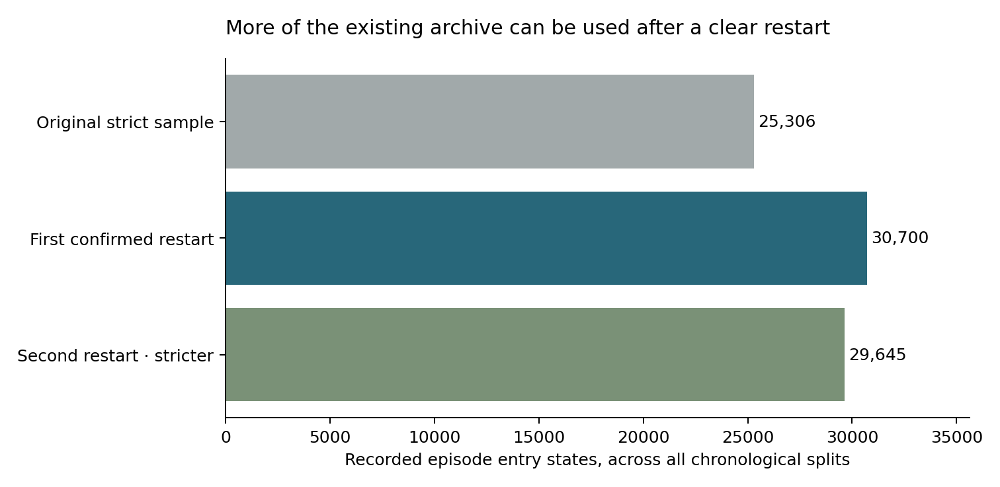
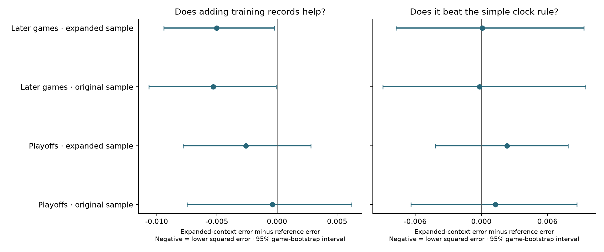
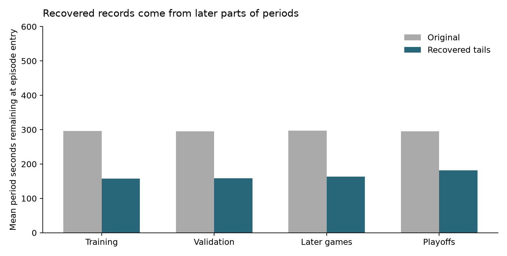

Kevin Yamada · University of Toronto
What the current data can tell us
A shooting-location study, a basic remaining-points model, and a careful way to use more of the supplied archive. All analysis ran on the desktop CPU. No additional Modal work was used.
1 · Completed work
The project is reproducible and reviewable
- The court explorer describes 38,535 recorded regular-season attempts, with 38,441 in the half-court view.
- All 624 game/team shot totals and final scores reconcile with the supplied team boxes. Individual player-attribution disagreements remain documented.
- The event model estimates ordinary points remaining at the start of a team’s turn, after a miss, or after an offensive rebound.
- Free throws and offensive-rebound continuation are handled explicitly. The source provides no official possession IDs.
2 · Better use of the same archive
Resume after a clearly observed restart
Previously, a technical foul, special free throw or overturned review could exclude an entire period. We now keep the uncertain sequence excluded and use an ordinary tail only after the last such event, a missed field goal, an opposite-team defensive rebound and a following action that confirms that team’s control.
A stricter check waits for a second confirmed restart. Score conflicts, uncertain jump-ball winners, ordering problems and individual episode failures remain exclusions.

3 · Matched prediction comparisons
Does using more records help?
Original training uses the strict sample. Expanded training adds the qualified tails using the same model settings. Every displayed row predicts exactly the same chosen evaluation records.
Recovery results could not be loaded. Reload this page to try again.
| Model and training sample | Error score · RMSE | Mean absolute error |
|---|
Errors are in remaining ordinary points; lower is better. RMSE is the square root of the average squared error. It is a different measure from the average absolute error.
All models and uncertainty details
There is no new tuning or winner selection. The original models stay frozen. These 2025 games have already been examined; the comparisons are exploratory, not a fresh-season test.

4 · Limits to carry into the meeting
A larger sample still has a particular mix of situations

The verified achievement is a larger, traceable sample and a completed prototype. A general predictive advantage over a simple clock rule remains unproven. This archive still cannot value unrecorded passes and movement.
Period time is not the shot clock. These estimates are conditional remaining-point predictions, not causal player ratings or advice about which pass a player should choose.
5 · Concrete decisions for the group
What should the next phase answer?
- Confirm authoritative event order, possession/correction fields and the interpretation of overturned plays.
- Resolve documented source disagreements. For example, Rhyne Howard has 14 attempts in the events and 15 in the supplied player box for game 401736112. Both versions are preserved.
- If the goal is pass and movement value, identify a supplied dataset with actors, times, start/end locations and outcomes.
- For a new evaluation, obtain another consistently recorded WNBA season after model choices are fixed.
All basketball observations in this work come from Data (1).zip. No external basketball release or extra season has been mixed in. The current prototype can be reproduced without acquiring more data.